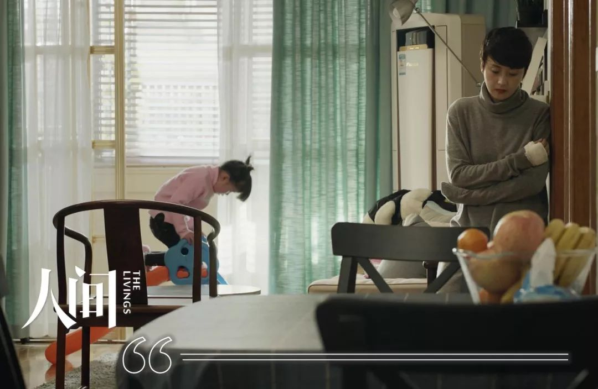

“停课不停学”第一周，老师战网络，家长做噩梦
原文链接 备份链接 “有一次我突击去检查孩子的网课情况，发现她网课是在播放，但是电脑桌面当前窗口显示的却是她的QQ群，原来一群同学正聊得欢。” 记者|王晓珊 编辑| 盛倩玉 小豆 实习生| 甘笠男 刘苗苗 龚纾绮 “咋出来的不是云课堂？难 …


看到老师发在班级群里别人家小孩听网课认真做的笔记，自己家的熊孩子却边听网课边睡觉，笔都不拿出来，妈妈们立刻炸了毛。火势再蔓延到孩子爸爸身上，爷爷奶奶也赶来劝，结果就是一场又一场的家庭混战。

配图 |《学区房72小时》剧照

在这个春节前，我从没想过，我们这些一线老师也会有在家办公的一天；也没想过，家长们还有放下工作全心全意陪读的一天；更没想到，家里的这些“神兽”们，会有哭着嚷着主动要求去上学的一天。
而这一切又来得如此突然。

2019-2020年度第一学期结束，作为班主任的我在学生们的成绩报告书上写下：假期自1月18日起至2月8日止，下学期定于2月9日8时报到。
当时，我脑子里盘算着开学前几天要在班级群里抽查学生的寒假作业，免得开学教新内容的时候还要挤出时间让他们补作业。
接下来，就是好好享受自己的假期了——跟往年的一样，欢天喜地和亲朋好友胡吃海喝，给孩子们穿上新衣服到处拜年，再约几家亲人一起来个短途旅行，想想都觉得开心。发完学生的成绩册，跟大家说完再见，就算是把熊孩子们又交还给家长啦。
放假第一天，我们教研组的几个小姐妹就相约一起带着孩子逛街吃饭，好好玩了一圈。临分手的时候，大家还约好，过几天再带娃看电影。可还没来得及约看电影的时间，铺天盖地的肺炎新闻就来了。
等到封城的消息传来，口罩和消毒水也买不到了，门也出不了了。朋友圈里流言四起，一时间人心惶惶。但即便这样，我也没想到接下来自己的寒假会是那样度过的。

忙碌和紧张仿佛是忽然开始的。
1月24日除夕那天，我们一家人正在准备年夜饭，手机忽然响起，领导在工作群里要求，各位班主任要立刻统计班里湖北籍学生的情况：有无回湖北过年，有无跟湖北亲人接触，学生的现居家庭住址，家长工作单位，学生现在的身体情况等等。若有，必须马上上报。
我连忙在工作群里问其他人：“整个湖北的都要查？不是只有武汉吗？”
同事们你一言我一语，各种消息的转发和截屏一下全冒了出来，一路看下来才知道，这个病可不是挂几瓶盐水就能好的，而且传播速度很快。
我立马打开电脑翻出班级资料，认真检查了一遍班级信息。我班里有一位湖北籍学生，电话打过去，他们已在本市买了房子，今年没有回湖北过年，也没有湖北亲人过来。
随后，紧张的气氛把所有过年的喜悦都替代了，家庭聚会也一并取消。
父亲是个闲不住的人，天天都要去菜场转一圈，我好言相劝：“菜场人那么多，如果有一个人传染上，那整个菜场的人都有可能感染，家里又不是没有菜，这几天别去了吧。”他还不愿意，“武汉离我们这里这么远，怕啥？！”
“那行，你把口罩戴上。”我又劝，他还是不情不愿，“出去买个菜还要戴口罩，你们学校开学时难道戴口罩上课？到时候肯定课都上不了。”
没想到父亲一语成谶，1月26日大年初二，教育局发紧急通知，学校开学时间推迟——这可是这么多年来从来没有过的事。
一听说寒假要延长，女儿就乐了，想到可以一直看动画片、安心地睡懒觉，而且还能理所当然地一天到晚躺沙发上吃东西，真是神仙般的日子。寒假作业早就做完了，纯玩的生活让她乐得合不拢嘴。
而我却更慌了。

开学时间延迟，就意味着下学期的课程内容来不及教，那可怎么办？一学期要教的内容是固定的，时间短内容多，学生消化不了，老师和家长都着急。班级群里也开始不停有家长来问。
很快，又有政策下来：所有老师提前设计第一周预习计划发给学生，学生在家学习，同时布置线上教育的观看及作业的完成，“停课不停学”。
要设计教学计划、要网上授课，可是眼下放假在家，手头书本、资料都不全，怎么设计？无奈只能戴好口罩手套，全副武装去学校翻几本书回来。
路上空荡荡的，难得有三两辆车开过，一个行人都没有，经过学校卡口时，穿着红背心的志愿者正要量体温和看身份证，忽然有人喊我名字，是同事小辉——他戴着口罩和护目镜站在不远的地方，我差点没认出来。
“你在当志愿者呀？”我好奇地问。
“我们小课老师不用设计进度表，闲着也是闲着，就过来做点事。你是去拿书吧？我刚看到小胡经过。”
“对，你们晚上也要值班吗？”
“要的，后半夜比较冷，前半夜稍微好点。”
想到自己一觉睡到大天亮，他们却在守着寒夜，我也赶忙督促自己打起精神来。
我琢磨了好久，自己这个英语课该怎么上。不是面对面给孩子们上课，没有看着他们的小嘴发音，没有一个个让他们站起来把新句型读给我听，更没有互动反馈，我心里总觉得有点悬。
又想到平时上课，老师就站在那里盯着大家，孩子们都会偷偷开个小差、做个小动作，现在老师不在身边了，肯定是一派“开大差、做大动作”的场景。一想到这个，我连班里几个调皮孩子的样子都脑补了出来。
保险起见，在设计预习计划时，我决定先安排最简单的抄写和跟读。即便如此，心里还是有些忐忑不安……中学生我不了解，但对于几乎没有自制力的小学生而言，远程教育这种新方式实在令人不太放心。
设计完课程，我便跟女儿说：“去把妈妈给你借的书拿出来预习几遍。把不会的部分用笔标出来，到时候学起来就轻松多了。”可女儿嘴上应着，身子没有动。我刚想发脾气，就被老公按住了，“要相信孩子……大过年的，别动不动就骂小孩。”我只能忍住，好，就相信你吧。
1月30日，大年初六，学校公布了下学期语文要背的课文。若在家里背熟了，开学后就能省出时间了。作为班主任，我连忙在班级群里布置下去，“请同学们放下手机，iPad和电视遥控器，把下学期的课文先背起来吧。”
我在群里呼吁，可过了好半天，也只有小部分家长响应。大部分家长都觉得还早着呢，放松几天再说。
家长也没错，才初六，我也想多放松几天，可眼下的情势确实不容乐观。
2月1日那天，工作群里的消息一条接着一条，学校连续布置了好几个任务：“各位班主任，请班级群里上报学生体温，做成每日排摸情况动态表上报。若班级群里10点前联系不到的，打电话确认，确保每位同学都上报。”
紧接着又有：“各位班主任，请排查武汉地区的人员，1月10日班级学生家庭成员有无去过武汉或者与武汉来的人员接触。如有，速报家庭成员主要信息，摸排工作务必到边到角，做到无遗漏，无死角。”
于是，QQ、短信、电话齐上阵，询问到每位学生的情况，每个班主任都忙碌得像电信公司的接线员。
还没做完统计，我又接到通知：“各位班主任，近期将网上学习安排表发送给学生，确保布置好2月3号开始的网上学习。”
教研组的小群立刻热闹了起来：我们是要当主播了吗？像某视频网站那种老铁双击666，刷火箭？天啊，这也太刺激了吧。要不要早上起来画个妆？会不会很紧张？感觉是被全国人民听课的感觉啊，不会变成网红吧？
等我们看到第一期网课安排时，才发现是自己多虑了——第一期网课都是本地区优秀教师的录播，内容大多是课外阅读和课外拓展，算是正式上课前的热身，我们只要提醒学生看就可以了。
大家这才长舒一口气。

等到2月3日网课一开，家长也忙碌起来。
早上一睁眼，我就开始催家长们上报孩子的体温状况，这种不上班的日子，家长大概也想多睡一会儿，群里响应寥寥。可我这边已经等不及了，只能硬着头皮一个个打电话。
早晨9点，网上授课开始，太多人登录网站，服务器一下子瘫痪了，家长用尽办法但几乎没有人能成功登录，又都来问我：“老师怎么办？打不开，试了一个小时都登不上去。”
我也很着急，我家女儿是要上网课的，手机、电脑、iPad，一个个试过来，都不行。4G、无线网轮流切换，也不行。我只能一一劝慰：“没事没事，是录播，可以稍晚的时候回看。”一整个上午，我连上厕所都不敢把手里的电子产品放下。
我在这边火急火燎的，我女儿也有点着急，我布置的任务她可能不怎么放心上，但老师的话还是听的。隔一会儿就跑来问我，“打开了没？”我更着急了。
好不容易等到中午，人少一些了，我才终于打开了学校的网课页面，每节课都试了一遍，都能播放，赶忙在班级群里公布这一好消息。
录课的老师都是我们地区耳熟能详的名师，平时我们老师听到他们一节课都很难，对我来说也是个学习的机会。
语文讲的是课外阅读的赏析，英语上的是课外绘本。老师们讲得非常细致，这两本书我女儿都看过，所以看得津津有味。转念又想，如果没看过书的同学肯定听得云里雾里，现在快递都停了，想买书都买不到，真为班里的孩子们捏一把汗。
此时，班主任群里又发来新消息，需要填写《新冠疫情防控全员摸排表》。这是一张非常详细的统计表格，除常规的姓名、性别、联系电话、身份证号码、籍贯和家庭现居地址外，还包括学生在假期期间去过哪里、有无接触过疫区人员、有无离开本地、去了何处、几时回来、有无隔离、身体是否健康等很多问题。
我一下头大了。这可是个艰巨的大任务——不是每个孩子的家长都会填电子表格，也不是每户人家手头都正好有电脑。有些回老家的学生，他们家里连手机网络都连不上。还有个别孩子爸爸妈妈不在家，跟爷爷奶奶生活，爷爷奶奶连字都认不全，家里的电子产品只有老人机。填这样一张表格，实在太过于为难。
几个班主任忍不住发牢骚：平时上学，我们还能把表格印好发下去，家长拿笔填一下，第二天老师收上来自己填。这下怎么办才好。
可牢骚归牢骚，手头的活可一刻没停，实时催，实时填，实时回复，像淘宝店的客服一样，生怕回复晚了，家长又联系不到了。
果然，总会有几个家长嫌老师烦，乱填一气，班主任们只能挨个仔细审核、电话确认。详表填完，我再做汇总。我一边做自己班的活，一边还要给女儿填，一天下来，眼前直发黑。
晚上和一个小姐妹聊天，她被教育局选中要求录一节三年级数学课，发朋友圈抱怨，“太忙了……连续几天都凌晨四五点才睡，早上八九点就要起来。”
我问她，为什么要五六点才睡？
“白天孩子要上学而思和新东方的‘收心课’，还有那么多作业要做，我都要陪着，早中晚三顿也要伺候着。晚上才能自己录课，一不小心说错一句或者有个停顿，就要重新录，录完觉得哪个地方要修改又要重新录，一不注意，就是凌晨五六点了，睡到八九点，又要开始陪小孩上网课……太苦了。”
小姐妹说，录网课时没有黑板，也不露出老师的脸，主要是对着PPT讲，学生到时候就看PPT上的知识点就好。“校长专门提要求，让我拿出最精彩的课堂设计，所以我录了无数遍，还拿我自己儿子试一遍。”
平时上课，老师和学生面对面有交流，不管是眼神还是语言，随时根据学生的反应把课上孩子们掌握不够扎实的地方多练几遍。现在，录课是没有学生的，重难点要靠老师根据自己经验把握。问题问下去，只能自问自答，也很无趣。而且作为小学老师，为了让小孩子们不要那么快走神，还得专门设计很多有趣的环节。
确实挺不容易。

2月10日，原计划正常开学的日子到了。
此前学校安排的网上学习还只是课外知识，可以随便看看，实在不想看也不强迫。现在是课本上的知识真正开始学习，家长们都很重视。家里所有的电子设备都提前准备好，书本能借到的借、不能借到的下载电子书，有打印机的家庭打印好要用的资料，还要在这个特殊时期努力准备好足够的文具、笔记本、作业本，全力以赴配合孩子的学习。
和往常一样，早上我一睁眼就开始统计自己班里学生的身体情况，电话QQ双管齐下填写每日摸排情况动态表。趁空隙，把还在睡梦中的自家孩子拉起来，扔到电脑前，看她一脸没睡醒心不在焉的样子，火爆脾气立马就上来了。
想必我班里学生的家长也和我一样。
8:40网课开始，内容非常丰富，有语文课、数学课、英语课、美术课、音乐课，体育课和信息课，跟学校里上课一样多姿多彩。然而网站却还是卡得厉害，如果之前一周的课以课外知识为主，家长们不上心也无大碍，这次就真的是课本里的新知识了，落下一点都不行，登不上网站家长们都急得骂人。
可是，不管怎么试，网站就是那么卡。焦虑的家长们不停问老师，“怎么这么卡，你们就不能想点办法出来吗？到现在书本都不发，我们怎么学？你们就不能提前把书本快递订好发给我们吗？”
可我们也很无奈，快递已经停了，怎么寄？
很快，有老师提出可以把视频上传到网盘里，再发到班级群，这样就不用担心了。很快，任课老师们都行动了起来，班级群里有了完整的网课视频，家长们终于平静下来。
作为英语老师，我认真观看、学习了英语课，画质清晰、发音清楚、重难点突出、各环节紧凑，最难得的是，一次口误都没有出现。将心比心，那位老师一定也录了无数遍，才有这样的效果。
然而，网课没问题，但熊孩子们买不买账是另一回事了。
很快，班级群里就有家长抱怨：“幸亏有两个鼻孔出气，不然要气死。我家那小崽子，我让他自己上网课，刚打开门看看，居然睡着了！”
“你这算什么，我家那个把进度条拉到最后，然后趁我没盯着偷偷打游戏，我走到他身边都没发现。”
“一样的，都不认真的，小孩子呀，有几个管得住自己，还是要大人盯着的。”
……
我顾不上回复，立刻跑去看了一眼自家娃，居然一边吃薯片一边上课，嘴里还念叨着：“一点都不好看”，站在门外的我差点要吐血——这是上课，当然比不过你的动画片好看。
上完课，任课老师就要布置作业、提醒学生提交作业了。
这又是个大问题，有家长说，我们没有书做不了抄写，我连忙第N次把电子课本发班级群里；有家长说，我们没本子，难道要我们冒险出去买吗？我退而求其次，说拿张纸就行；还有家长说我们都要上班，孩子没有手机看不到群里的作业，能不能拖几天？个别家长还说，我们在外地被隔离，要啥没啥，晚几天完成行不？我只能回答：“行行行，只要正常开学前完成都行。”
我问了家里只有老人机的孩子，有没有借到智能手机，他们直接回答我，“没有，作业不做了。”我无言以对，眼下这种时候，还能说什么呢？只能自己记下来，开学了给他单独补了。办法总比困难多。
学校也知道家长们的难处，让班主任在班级群里发通知：作业不做硬性要求，网课上学过的内容，老师会开学后抓重点重新教，不用太着急。
可这么说，问题就又来了——焦虑的家长们更担心了。老师群里说：“停课不停学，只要孩子不是在荒废光阴，在学习，就是停课不停学。学习书本上的知识是学习，自己看几本书也是学习，学一项技能也是学习，不用硬性交作业。”
于是，小家伙们立刻开始拿着鸡毛当令箭了——女儿拿着他们班主任发的回家作业说：“妈妈你看，老师说有条件的同学把词语抄写完后默写一下，你看看，不是每位同学都必须交，有条件，你看到没？”我只能瞪她一眼：“你没条件？缺了笔还是缺了书？”
“缺时间，我要看动画片。”
气得我立马掏出鸡毛掸子，“好几位小朋友都默了，还全对，你还在跟我讲这个？！”

眼下，各种各样的网课和收心班要把家长们逼疯了。
原来的工作日，小孩在学校读书，家长在外面上班，眼不见为净，发火炸毛都是老师的事。家长晚上盯着孩子写一会儿作业，亲子关系倒也没那么剑拔弩张。如今疫情还没结束，家长们大多都还没开工，在家时时刻刻看着孩子学习，所有的缺点都暴露在眼皮底下，很难不发火。
更何况，这个世界最可怕的就是比较——你家有个乖宝宝，跟别人家更乖的宝宝一比，就觉得自家那个没那么好了。本来觉得自家孩子聪明伶俐又可爱，跟学霸一比，就觉得自己家的太差了，恨不得揍一顿。
常有家长把自家优秀的孩子晒在朋友圈，说今天做了多少张试卷，得了多少次满分，自学已经学到第几课，下面就是一群羡慕嫉妒恨的家长。
看别人家的孩子打卡作业天天优秀，字迹端正还自觉及时，而自己家的错误一堆，字迹不端正还拖拖拉拉，家长的焦虑马上就变成暴脾气发在孩子身上；看到老师在班级群里发的别人家小孩听网课认真做的笔记，自己家的熊孩子却边听网课边睡觉，笔都不拿出来，妈妈们怎能不炸毛。
妈妈一发火，火势立刻会蔓延到孩子爸爸身上，一旦操起鸡毛掸子要揍娃，爷爷奶奶肯定会来劝，无可避免的又是一场家庭混战。
有家长在班级群里反馈意见说：“一节网课下来能掌握的内容并不多，不如上课教的实在。上完课还要家长重新教一遍，语文数学我们还能教一下，英语的发音我们自己都不标准，我这几天快要焦虑到炸了。”
其他几个家长也表示赞同，“我们家的不自觉，我一忙自己的事，他就开始偷懒，字写得不认真，题目错误率又高。还是早点开学吧，教娃真是太令人头疼了。”
老师们就讨论，觉得学生把网课看完已经蛮好了，布置的作业也不多。其他同事纷纷附和，开学后还要重新教，这几天让他们稍微涉及了解一点就行。
“坚持一下吧，共克时艰。”最终，大家只能这样相互安慰。
我觉得，家长真不用那么焦虑。我无数次在群里跟大家说：“没事的，课文老师还会重新讲的，不会跟不上的，办法总比困难多。”
但家长的焦虑哪是一两句话就能打消的。
那天，我在朋友圈里看到一个朋友给孩子排的课表，7点起床，9点半睡觉，这段里面排满了各种线上课，有学而思的、新东方的、学校里的，还有课外艺术培训的。
我实在忍不住问她，你家孩子才3年级，你抓那么狠？
“别提了，我今天还把孩子打了一顿。他慢条斯理做事的样子，我控制不住啊。寒假里大家都在拼，我要是放任他玩耍，到了开学不是一塌糊涂，比别人差一大截吗？我也真是着急啊。”
这就是所谓“弯道超车”吧，我为那孩子捏一把汗。
在我家，我遵从女儿的意见，寒假没给她报课外补习班，所以焦虑没那么严重。但学校里的课我还是盯着的，陪着按时上课、催促做作业、及时提交作业，不过并没有给她检查作业——老师要看真实错误率，才会在开学后有针对性地讲解。
当然，即便如此，鸡飞狗跳的事情还是时有发生，但也只能这样了。
尾声
前阵子，朋友圈里有个段子，说一场疫情，全民成厨子了，医护成战士了，老师成主播了，家长成班主任了，只有孩子们，依然是神兽——仔细一回味，还真是。
女儿天天都在抱怨：“说什么推迟开学，我看是提早开学，我的寒假都没怎么玩，一天天地关在家里被你骂，一点都不爽。”
我瞪了她一眼，我又何尝不是呢，既是家长又是老师，我太能理解了，老师们觉得网课隔靴搔痒不够痛快，都蓄好力量打算在课堂里大展身手，盼着快点开学；家长们每天看着自家的熊孩子，理解管教孩子的不容易，盼着快点开学；而孩子们早就关不住了，每天都要问无数遍：“我什么时候能出去上学？”
江南的树已经冒出新芽，枝头的花儿也在逐渐开放，春天马上就要到来，寒冬总要过去的。相信疫情也会马上过去，一切都会好起来，大家期盼的开学应该也在眼前了。
编辑 | 沈燕妮
木 乐
用笔记录身边的故事
本文系网易新闻人间工作室独家约稿，并享有独家版权。如需转载请在后台回复【转载】。
投稿给“人间-非虚构”写作平台，可致信：thelivings@vip.163.com，稿件一经刊用，将根据文章质量，提供千字500元-1000元的稿酬。
投稿文章需保证内容及全部内容信息（包括但不限于人物关系、事件经过、细节发展等所有元素）的真实性，保证作品不存在任何虚构内容。
其它合作、建议、故事线索，欢迎于微信后台（或邮件）联系我们。


点击以下「关键词」，查看往期内容：
群聊魔鬼 | 月嫂回忆录 |家暴 | 健身房的坑 | 生子丸
考公| 萌宠博主 | 82年的金智英 | 女大学生的毒虫男友
大牛失业 | 卧底狱警 | 娶妻改命 | 中年男人的窝囊死亡
职校老师 | 产科记事 | 改嫁 | 寻业中国 | 三大队 | 股市梦碎
扶弟魔 | 末路狂花 | 下乡扶贫| 外卖小哥 | 杀死我的女神
东北相亲 | 我放弃了科研 | 网红女同学 |与巨婴离婚的女人

原文链接 备份链接 “有一次我突击去检查孩子的网课情况，发现她网课是在播放，但是电脑桌面当前窗口显示的却是她的QQ群，原来一群同学正聊得欢。” 记者|王晓珊 编辑| 盛倩玉 小豆 实习生| 甘笠男 刘苗苗 龚纾绮 “咋出来的不是云课堂？难 …
原文链接 备份链接 “ - 疫 情 之 下 - 她不会要求她的学生们将来必须成为医务工作者、科学家、警察、建筑工、老师，但她一定会要求自己的学生，好好学习，将来一定要用自己所学、所知、所拥有的知识和技能守护好那些曾经守护过他们的人。 ” …
原文链接 备份链接 文/六筒 李岩半年前刚去过武汉，和家人去旅游，主要想看看黄鹤楼。那还是夏天，热气蒸得人头上冒烟。高温挡不住蜂拥的游客，摩肩接踵，拥塞的车辆在大道上艰难挪动。“真是个大都市”，她想。 李岩是河北医科大学第二医院呼吸与危重 …
原文链接 备份链接 明明开学都推迟了 家长反而更忙乱了疫情之下，不少当爹妈的宅在家，陪娃过着漫长的寒假。 停课不停学，老师当主播，在家上网课，却让不少家长直呼撑不住。一边要在家办公，一边还要参与学校布置的任务，光是每天直播课的花式打卡， …
原文链接 备份链接 全文共3557字，阅读大约需要7分钟。 “停课不停学”不等于上网课，上网课也不是简单的课堂转移。广义上的学习，是让孩子在生活痕迹中思考本质，借助互联网和信息化教学资源建立属于自己的精神天空。 教学形式的演进无法代表教育 …